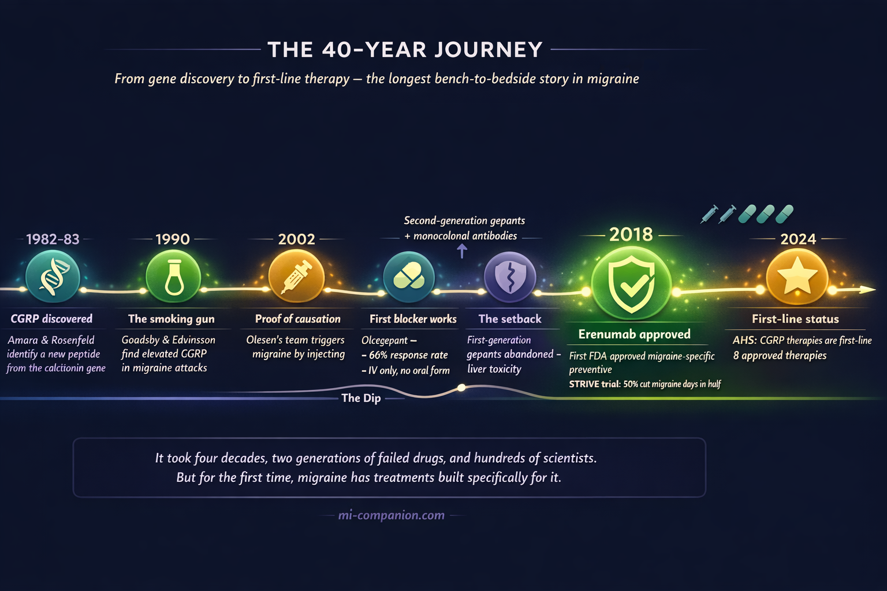
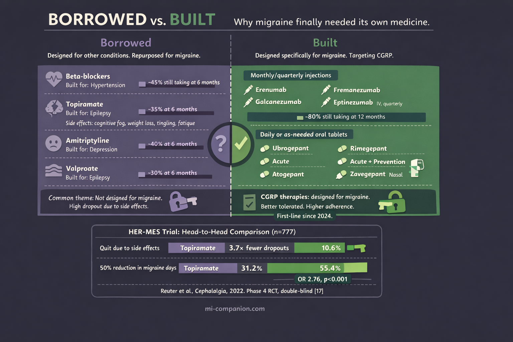

By Rustam Iuldashov
30 years lived experience with chronic migraine | Sources: 23 peer-reviewed references including New England Journal of Medicine (n=955), Lancet (n=246), Cephalalgia (n=777), Headache, Nature Reviews Neurology | Last updated: March 8, 2026
Medical Review: This content is based on peer-reviewed research from the New England Journal of Medicine, Lancet, Lancet Neurology, Cephalalgia, Headache, Nature Reviews Neurology, Annals of Neurology, European Journal of Neurology, and Physiological Reviews.
Important Notice: This article is for informational purposes only and does not replace professional medical advice. The author is not a licensed physician or healthcare professional. Always consult your doctor before making changes to your treatment plan.
Key Takeaways
- CGRP (calcitonin gene-related peptide) was discovered in 1982–1983 and linked to migraine through landmark human studies in the 1990s measuring elevated levels during attacks[6, 7, 9]
- Eight FDA-approved CGRP-targeting therapies now exist — four monoclonal antibodies for prevention and four oral gepants for acute and/or preventive treatment[21]
- In the pivotal STRIVE trial (n=955), 50% of patients on erenumab 140 mg had their migraine days cut by at least half, with side effects comparable to placebo[15]
- The HER-MES head-to-head trial showed erenumab was both better tolerated and more effective than topiramate — nearly four times fewer patients quit due to side effects[17]
- The American Headache Society recommended CGRP therapies as first-line prevention in 2024, eliminating the requirement to fail older medications first[22]
- Long-term data (up to 5 years) show sustained benefits with no new safety signals[18]
The Borrowed Medicine Problem
Your doctor hands you a prescription. It’s a blood pressure pill. You don’t have high blood pressure. But you do have migraine — and this is the best medicine can offer.
For most of the 20th century, every preventive drug prescribed for migraine was designed for something else. Beta-blockers built for hypertension. Anticonvulsants developed for epilepsy. Antidepressants intended for mood disorders.[1] Sometimes they helped. Often the side effects were devastating: weight gain, cognitive fog, tingling in the extremities, crushing fatigue. In the United States, nearly 30% of patients abandoned their preventive medication within six months — not because their migraines improved, but because the cure felt worse than the disease.[2]
Migraine deserved better. It affects over 1 billion people worldwide — roughly 14% of the global population — and ranks as the second leading cause of years lived with disability on the planet.[3, 4] Among young women, it ranks first.[5] This is not a minor inconvenience. It is a neurological condition that steals careers, fractures relationships, and erases entire days from the calendar.
Yet for decades, researchers had no clear molecular target. They knew the pain was real. They simply didn’t know which molecule to chase.
Then they found CGRP. And everything changed.
A Peptide Hiding in Plain Sight
The CGRP story begins not in a headache clinic but in a genetics lab. In 1982, Susan Amara and colleagues at the University of California discovered something unexpected: the calcitonin gene — responsible for calcium regulation — could be spliced differently in nerve tissue, producing an entirely new peptide.[6] A year later, Michael Rosenfeld’s team confirmed and named it: calcitonin gene-related peptide, or CGRP.[7] Thirty-seven amino acids long. One of the most potent vasodilators (substances that widen blood vessels) ever found. Packed into sensory neurons throughout the nervous system.
Nobody connected it to migraine. Not yet.
That connection required two scientists, a Swedish conference hall, and a conversation over coffee.
The Coffee That Changed Neurology
June 1985. Peter Goadsby — a young Australian medical student obsessed with migraine — sat in the audience at a conference in Lund, Sweden. On stage, Lars Edvinsson, a physician at the local university hospital, was describing the trigeminovascular system: the network of nerves wrapped around blood vessels in the head. Edvinsson had been mapping the neuropeptides in these nerve fibers for years. He’d found that trigeminal neurons contained CGRP — and that the peptide could dilate cerebral blood vessels.[8]
After the talk, Goadsby introduced himself. They talked. They realized they were asking the same question from different angles: could CGRP be the chemical signature of a migraine attack?
That coffee launched a partnership that would reshape the field.
The Smoking Gun
By the late 1980s, Edvinsson and Goadsby had developed the methodology to measure neuropeptides directly in the human cranial circulation. The pivotal experiment came in 1990. They drew blood from the jugular vein of patients in the grip of a severe migraine attack, then again after the pain resolved.[9]
The results were unambiguous. CGRP levels surged during the attack and dropped back to normal when it ended. No other neuropeptide showed this pattern as clearly. Substance P, neurokinin A — the other suspects — were ruled out. CGRP was the signal.
Three years later, they tightened the case. Sumatriptan — a new triptan drug at the time — reduced CGRP levels in the jugular blood at the same time it relieved the headache.[10] When CGRP went down, the migraine went away.
But correlation is not causation. The final, definitive piece came in 2002 from Jes Olesen’s group in Copenhagen. They injected CGRP intravenously into people susceptible to migraine.[11] Every patient developed a headache. Three of nine met full diagnostic criteria for migraine. When the same injection was given to people without migraine, only a mild headache resulted.
CGRP wasn’t just present during migraine. It could start one.

Proof of Concept — and a Roadblock
Identifying a target is one thing. Building a drug to block it is another. And the road from CGRP discovery to CGRP therapy was not straight.
The first attempt came in 2004, when Olesen, Goadsby, and an international team tested olcegepant (BIBN 4096 BS), a small molecule designed to block the CGRP receptor.[12] Administered intravenously to patients during a migraine attack, it achieved a 66% response rate at 2 hours — compared to 27% for placebo. The study was published in the New England Journal of Medicine. The scientific community took notice: blocking CGRP could treat migraine.
But olcegepant couldn’t be taken as a pill. Its molecular structure made oral delivery impossible, and intravenous infusions are impractical for a condition that strikes without warning.
The next generation of small-molecule CGRP blockers — called gepants — solved the oral problem but created a new one. Telcagepant showed efficacy in clinical trials, then caused liver toxicity in some patients during prevention studies.[13] Development was halted. Other first-generation gepants met similar fates by 2010.
The science was right. The chemistry needed a different approach.
The Antibody Breakthrough
That approach came from monoclonal antibodies — lab-engineered proteins designed to neutralize a specific target with extraordinary precision. Unlike a gepant, which blocks the CGRP receptor for hours, a monoclonal antibody binds to CGRP or its receptor and stays active for weeks. One injection. Once a month. Sometimes once every three months.
Four antibodies were developed for migraine prevention: erenumab (which targets the CGRP receptor), and fremanezumab, galcanezumab, and eptinezumab (which target the CGRP molecule itself).[14]
The clinical trial results broke new ground.
In the landmark STRIVE trial — published in the New England Journal of Medicine in 2017 — 955 patients with episodic migraine received either erenumab or placebo for six months.[15] Patients on the higher dose (140 mg) experienced a 3.7-day reduction in monthly migraine days from a baseline of 8.3. Half of them had their migraine days cut by at least 50% — nearly three times the odds compared to placebo. Over 90% of patients completed the study. Adverse events were comparable to placebo: no brain fog, no weight gain, no cognitive dulling.
This was not an incremental improvement. This was a different kind of medicine — one designed for migraine from the molecule up.
In May 2018, erenumab became the first FDA-approved treatment specifically built for migraine prevention.[16] Within a year, all four monoclonal antibodies had received regulatory approval.
Head-to-Head: The Definitive Comparison
A drug that beats placebo is promising. A drug that beats the standard of care is transformative.
In 2022, the HER-MES trial delivered that proof.[17] This Phase 4 study — the first head-to-head comparison of a CGRP antibody against a standard-of-care migraine preventive — randomized 777 patients to receive either erenumab or topiramate for 24 weeks.
The gap was enormous. In the topiramate group, 38.9% of patients quit due to side effects — paresthesia, attention problems, fatigue, nausea. In the erenumab group, just 10.6% did. And 55.4% of erenumab patients achieved at least a 50% reduction in monthly migraine days, compared to 31.2% on topiramate.[17]
The lesson is simple but powerful: a drug can only help if you keep taking it. Tolerability isn’t a luxury — it is the foundation of effectiveness.
Long-term data extending to 5 years confirmed the durability. Patients on erenumab maintained an average 62% reduction in migraine days, with no new safety signals emerging over the entire follow-up period.[18]

⚠️ When to Seek Emergency Help
CGRP-targeting therapies are not emergency medications. If you experience a sudden, explosive headache unlike anything you’ve ever felt (often called a “thunderclap headache”), sudden loss of speech or vision, or weakness on one side of your body — call your local emergency number immediately. These symptoms may indicate a stroke or other life-threatening condition, not a migraine attack.
The Gepants Return
While the antibodies were transforming prevention, the gepant story was far from over. A second generation of oral CGRP receptor antagonists — ubrogepant, rimegepant, and atogepant — overcame the liver safety issues that sank their predecessors.[19] These newer molecules showed no significant hepatotoxicity and proved effective for both acute treatment and prevention of migraine.
Rimegepant holds a unique position: it is the only medication currently approved by the FDA for both treating a migraine attack and preventing future ones.[20] This dual capability bridges a divide that has existed since the beginning of migraine pharmacology — the artificial wall between what you take during an attack and what you take to stop the next one.
As of 2026, eight CGRP-targeting therapies carry FDA approval: four monoclonal antibodies and four gepants.[21] Together, they represent the largest class of migraine-specific treatments ever developed.
First-Line: A Historic Shift
In March 2024, the American Headache Society took a step that would have been unthinkable a decade earlier. It officially recommended CGRP-targeting therapies as a first-line option for migraine prevention — alongside, not after, traditional treatments.[22]
The old model required patients to try and fail two or more older medications before gaining access to CGRP therapies. The new position eliminated that requirement. The AHS noted that the cumulative evidence supporting these drugs — in volume, scope, and quality — “significantly exceeds that for any other preventive treatment approach.”[22] More than 150 real-world studies published in just two years corroborated the clinical trial data: effective, well tolerated, safe over the long term.
This is not just a change in treatment guidelines. It is a recognition of what people with migraine have always known: this disease deserves treatments built specifically for it.
What This Means for You
If your current preventive treatment isn’t working — or if the side effects are stealing the quality of life the medication was supposed to protect — CGRP-targeting therapies may be worth discussing with your doctor. Under current AHS guidelines, you do not need to “fail” older medications first.[22]
These treatments are available as monthly or quarterly injections (monoclonal antibodies) or as daily or as-needed oral tablets (gepants). They work for both episodic and chronic migraine. They have been studied in patients who failed multiple prior preventives — and still showed meaningful benefit.[23]
The CGRP story is one of the great bench-to-bedside success stories in modern neuroscience. It took 40 years — from Amara’s gene-splicing discovery in 1982, through Edvinsson and Goadsby’s blood samples in 1990, past Olesen’s provocation experiments in 2002, through the clinical trials, the setbacks, the second chances — to arrive where we are today.
For the first time in the history of migraine, we have an entire class of drugs designed specifically for the disease. Not borrowed. Not repurposed. Built.
And for over a billion people, that changes everything.
⚕️ Important Medical Disclaimer
This article is for informational and educational purposes only and does not constitute medical advice, diagnosis, or treatment. The author, Rustam Iuldashov, is not a licensed physician, neurologist, or healthcare professional. He is a patient advocate with 30 years of personal experience living with chronic migraine.
All clinical claims in this article are sourced from peer-reviewed research published in indexed medical journals. Study designs and sample sizes are noted where applicable.
Always consult a qualified healthcare provider for questions about your individual health, migraine treatment, or medication decisions.
CGRP-targeting therapies require a prescription and a conversation with your doctor about your medical history, other medications, and whether these treatments are appropriate for you. This content was last reviewed for accuracy on March 8, 2026.
References
- Charles AC, Digre KB, Goadsby PJ, et al. “Calcitonin gene-related peptide-targeting therapies are a first-line option for the prevention of migraine: An American Headache Society position statement update.” Headache, 64(4):333–341 (2024). doi:10.1111/head.14692. Study design: Expert consensus / Position statement. n=N/A.
- Kawata AK, Shah N, Poon JL, et al. “Understanding the migraine treatment landscape prior to the introduction of calcitonin gene-related peptide inhibitors: Results from the ATTAIN study.” Headache, 61:438–454 (2021). doi:10.1111/head.14059. Study design: Cross-sectional survey. n=13,624.
- GBD 2021 Nervous System Disorders Collaborators. “Global, regional, and national burden of disorders affecting the nervous system, 1990–2021.” Lancet Neurology, 23(4):394–435 (2024). doi:10.1016/S1474-4422(24)00038-3. Study design: Systematic analysis. n=global population.
- Stovner LJ, Nichols E, Steiner TJ, et al. “Global, regional, and national burden of migraine and tension-type headache, 1990–2016.” Lancet Neurology, 17(11):954–976 (2018). doi:10.1016/S1474-4422(18)30322-3. Study design: Systematic analysis. n=global (1.04 billion with migraine).
- Steiner TJ, Stovner LJ, Vos T. “Migraine remains second among the world’s causes of disability, and first among young women: findings from GBD2019.” Journal of Headache and Pain, 21:137 (2020). doi:10.1186/s10194-020-01208-0. Study design: GBD analysis. n=global population.
- Amara SG, Jonas V, Rosenfeld MG, et al. “Alternative RNA processing in calcitonin gene expression generates mRNAs encoding different polypeptide products.” Nature, 298:240–244 (1982). doi:10.1038/298240a0. Study design: Molecular biology. n=N/A.
- Rosenfeld MG, Mermod JJ, Amara SG, et al. “Production of a novel neuropeptide encoded by the calcitonin gene via tissue-specific RNA processing.” Nature, 304:129–135 (1983). doi:10.1038/304129a0. Study design: Molecular biology. n=N/A.
- Edvinsson L, Goadsby PJ. “Discovery of CGRP in relation to migraine.” Cephalalgia, 39(3):331–332 (2019). doi:10.1177/0333102418779544. Study design: Editorial / Historical review. n=N/A.
- Goadsby PJ, Edvinsson L, Ekman R. “Vasoactive peptide release in the extracerebral circulation of humans during migraine headache.” Annals of Neurology, 28:183–187 (1990). doi:10.1002/ana.410280213. Study design: Prospective cohort. n=10.
- Goadsby PJ, Edvinsson L. “The trigeminovascular system and migraine: studies characterizing cerebrovascular and neuropeptide changes seen in humans and cats.” Annals of Neurology, 33:48–56 (1993). doi:10.1002/ana.410330109. Study design: Prospective cohort. n=human + animal.
- Lassen LH, Haderslev PA, Jacobsen VB, et al. “CGRP may play a causative role in migraine.” Cephalalgia, 22:54–61 (2002). doi:10.1046/j.1468-2982.2002.00310.x. Study design: Experimental provocation study. n=9.
- Olesen J, Diener HC, Husstedt IW, et al. “Calcitonin gene-related peptide receptor antagonist BIBN 4096 BS for the acute treatment of migraine.” New England Journal of Medicine, 350:1104–1110 (2004). doi:10.1056/NEJMoa030505. Study design: RCT (double-blind, placebo-controlled). n=126.
- Ho TW, Connor KM, Zhang Y, et al. “Randomized controlled trial of the CGRP receptor antagonist telcagepant for migraine prevention.” Neurology, 83:958–966 (2014). doi:10.1212/WNL.0000000000000771. Study design: RCT. n=660.
- Edvinsson L, Haanes KA, Warfvinge K, Krause DN. “CGRP as the target of new migraine therapies — successful translation from bench to clinic.” Nature Reviews Neurology, 14:338–350 (2018). doi:10.1038/s41582-018-0003-1. Study design: Review. n=N/A.
- Goadsby PJ, Reuter U, Hallström Y, et al. “A controlled trial of erenumab for episodic migraine.” New England Journal of Medicine, 377(22):2123–2132 (2017). doi:10.1056/NEJMoa1705848. Study design: RCT (Phase 3, double-blind, placebo-controlled). n=955.
- US Food and Drug Administration. Erenumab-aooe (Aimovig) approval for migraine prevention. May 2018.
- Reuter U, Ehrlich M, Gendolla A, et al. “Erenumab versus topiramate for the prevention of migraine — a randomised, double-blind, active-controlled phase 4 trial.” Cephalalgia, 42(2):108–118 (2022). doi:10.1177/03331024211053571. Study design: RCT (Phase 4, head-to-head, double-blind). n=777.
- Ashina M, Goadsby PJ, Reuter U, et al. “Long-term efficacy and safety of erenumab in migraine prevention: Results from a 5-year, open-label treatment phase of a randomized clinical trial.” European Journal of Neurology, 28(5):1716–1725 (2021). doi:10.1111/ene.14715. Study design: Open-label extension of RCT. n=383 enrolled, 215 completed 5 years.
- Dodick DW, Lipton RB, Ailani J, et al. “Ubrogepant for the treatment of migraine.” New England Journal of Medicine, 381:2230–2241 (2019). doi:10.1056/NEJMoa1813049. Study design: RCT (Phase 3, double-blind, placebo-controlled). n=1,672.
- Croop R, Goadsby PJ, Stock DA, et al. “Efficacy, safety, and tolerability of rimegepant orally disintegrating tablet for the acute treatment of migraine.” Lancet, 394:737–745 (2019). doi:10.1016/S0140-6736(19)31606-X. Study design: RCT (Phase 3). n=1,466.
- Russo AF, Hay DL. “CGRP physiology, pharmacology, and therapeutic targets: migraine and beyond.” Physiological Reviews, 103:1565–1644 (2023). doi:10.1152/physrev.00059.2021. Study design: Comprehensive review. n=N/A.
- Charles AC, Digre KB, Goadsby PJ, et al. “Calcitonin gene-related peptide-targeting therapies are a first-line option for the prevention of migraine: An American Headache Society position statement update.” Headache, 64(4):333–341 (2024). doi:10.1111/head.14692. Study design: Expert consensus / Position statement. n=N/A.
- Reuter U, Goadsby PJ, Lanteri-Minet M, et al. “Efficacy and tolerability of erenumab in patients with episodic migraine in whom two-to-four previous preventive treatments were unsuccessful: a randomised, double-blind, placebo-controlled, phase 3b study (LIBERTY).” Lancet, 392:2280–2287 (2018). doi:10.1016/S0140-6736(18)32534-0. Study design: RCT (Phase 3b, double-blind, placebo-controlled). n=246.

How We Create Content
- Peer-reviewed sources only. New England Journal of Medicine, Lancet, Lancet Neurology, Cephalalgia, Headache, Nature Reviews Neurology, Annals of Neurology, European Journal of Neurology, Physiological Reviews, Nature, Journal of Headache and Pain.
- Study transparency. Study design and sample sizes noted for all clinical references.
- Source verification. All claims backed by numbered references with DOI links.
- Experience + Science. 30 years personal migraine experience combined with peer-reviewed evidence.
- Regular updates. Articles reviewed when significant new research emerges.
- No conflicts of interest. No funding from pharmaceutical companies manufacturing CGRP-targeting therapies.
Track Your Treatment. See What Works.
Migraine Companion helps you log attacks, track medications including CGRP therapies, and measure your personal response over time — turning guesswork into data.
Last reviewed: March 2026
Next scheduled review: September 2026